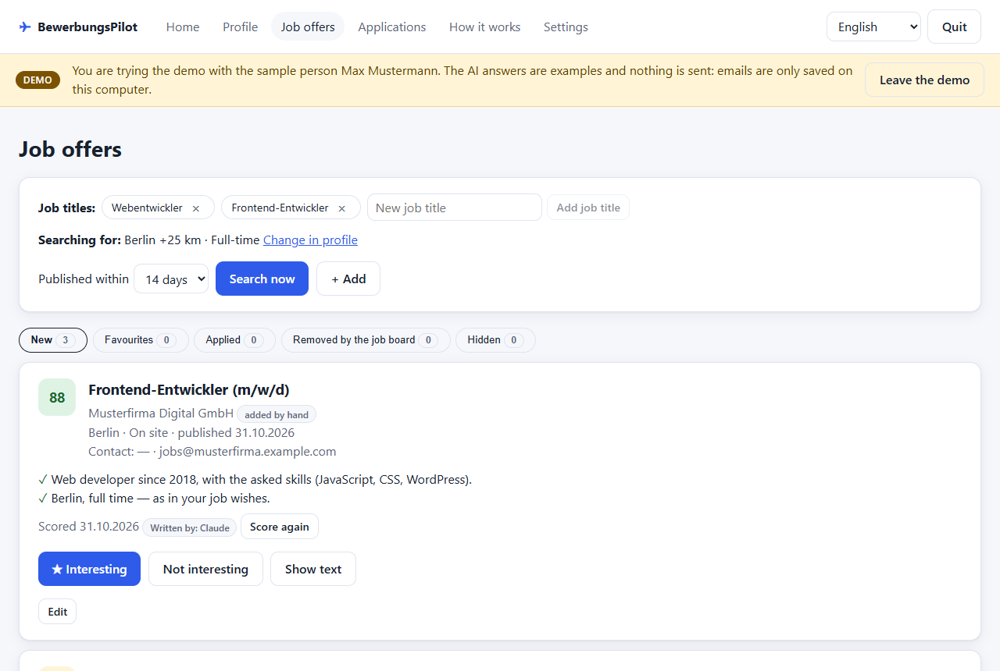
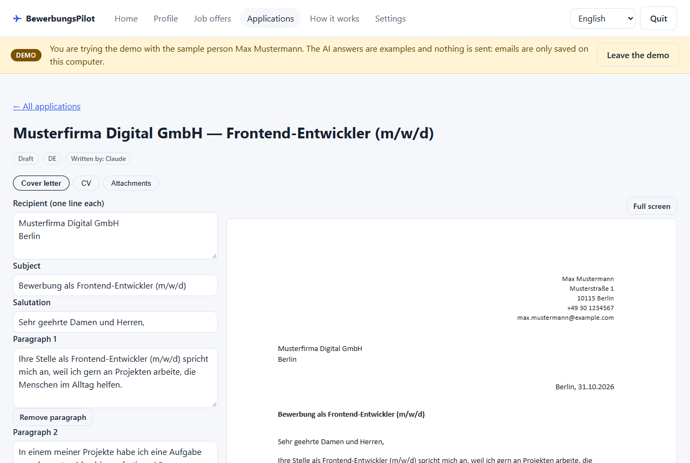
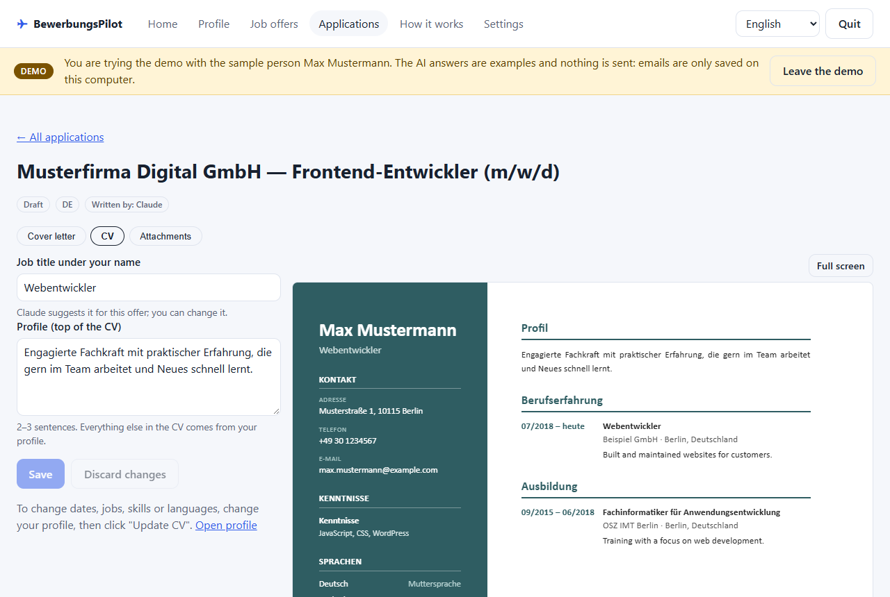
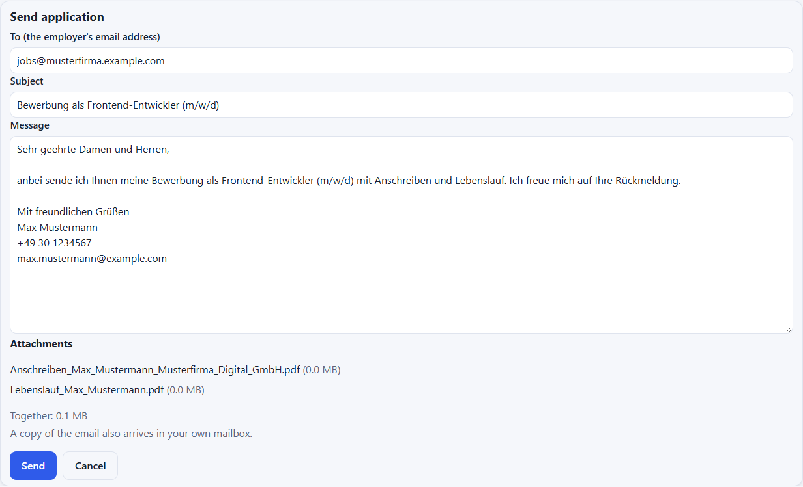
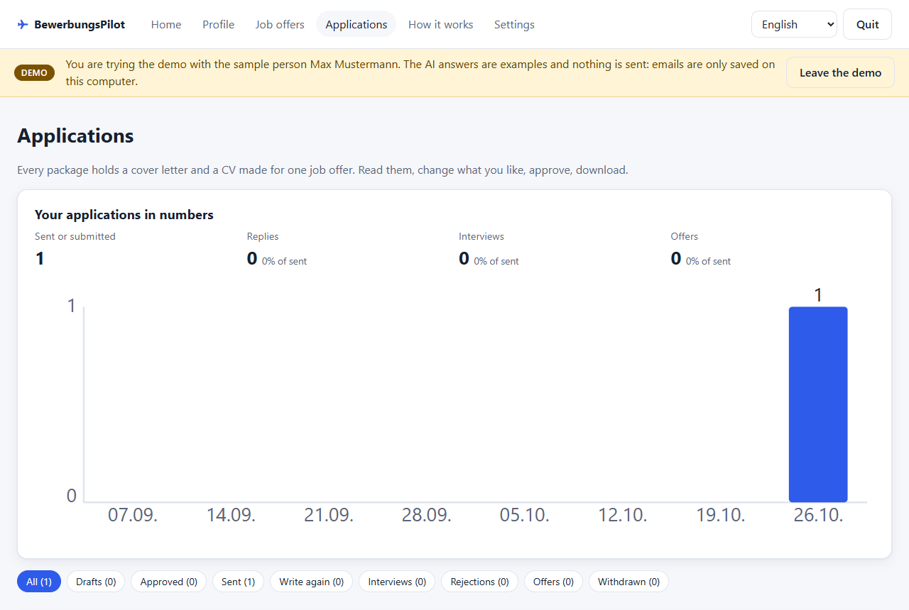

BewerbungsPilot
A free assistant for job applications in Germany that runs on your own Windows PC.
BewerbungsPilot finds job offers on the job board of the German Federal Employment Agency (Bundesagentur für Arbeit) that fit your profile, writes a cover letter and a tailored CV for the offers you choose with an AI helper of your choice (Claude or ChatGPT, using your own account), sends the applications you approved from your own email address, and keeps track of every answer. The app speaks Ukrainian, English, German, Russian, Polish and Romanian.

Start in 5 steps
- Download the file
BewerbungsPilot-vX.Y.Z.zipunder Assets on the download page and unzip it. - Install: double-click
install.bat. If Windows says “Windows protected your PC”, click More info → Run anyway (why this is safe). - Open the app with the BewerbungsPilot shortcut on your desktop. It opens in your browser.
- Try the demo (optional): one click shows the whole app with a sample person — no AI helper, no mailbox, none of your data.
- Set it up for yourself: choose your AI helper, upload your CV, check your profile and connect your mailbox. The app walks you through it.
What you need
| Computer | Windows 10 or 11. The installer sets up everything else, no administrator rights needed. |
|---|---|
| AI helper | Claude with a paid plan (prices), or ChatGPT — a free account works, but its limit is small: one application package takes about 1–3 requests. |
| Mailbox (optional) | Gmail, GMX, WEB.DE, T-Online, Yahoo, iCloud and others. Without one, download the PDFs and send them yourself. |
The demo needs none of these except Windows.
How it works
- Your profile. Upload your CV; the AI helper fills in your profile, and you check every section. It also asks a few short questions and turns your answers into true stories for cover letters.
- Job offers. The app searches the job board for your job titles and cities and scores every new offer from 0 to 100 with a short reason.
- Application package. For an offer you like, the AI helper writes a one-page cover letter and a tailored CV. You edit and approve everything; nothing is made up.
- Sending and statuses. You send an approved package from your own mailbox, mark answers (interview, rejection, offer) and get a reminder after 14 days without an answer.
What it looks like




Warnings you may see — and why they are safe
Windows SmartScreen — “Windows protected your PC” when you start install.bat:
click More info → Run anyway. The installer is not signed with a paid certificate yet, so Windows does
not know the publisher. It is a plain script you can read in the source code.
Google — “Google hasn't verified this app” when you connect a Gmail address: click Advanced → Go to BewerbungsPilot (unsafe). Google has not finished checking the app yet. It only asks for permission to send the emails you approve, never to read your mailbox (details). Until then at most 100 people in total can sign in this way; otherwise use GMX, WEB.DE or another mailbox.
Why the app asks for access to your Google account
If your email address is a Gmail address, you can connect it with Sign in with Google. The app then asks Google for exactly these permissions:
gmail.send— to send the emails you approved in the app: your job applications (with the PDF documents attached and a copy to yourself), follow-up reminders and replies to employers. Every email is shown to you and only sent when you click Send.openidandemail— to know which Gmail address you signed in with, so the app can use it as the sender address and show you which account is connected.
The app cannot read, search, change or delete any email in your mailbox. Data from your Google account stays on your PC, is never sent to the AI helper or anyone else, and you can disconnect at any time in the app's Settings (the permission is then taken back from Google). Details: Privacy policy.
Your data stays with you
BewerbungsPilot has no server and no user accounts. Your profile, documents, job offers and applications are saved
only on your PC, in %LOCALAPPDATA%\BewerbungsPilot. There is no tracking and no analytics.